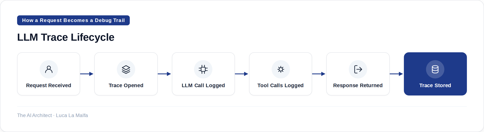

How to add tracing to your LLM application so you can actually debug it when things go wrong.
August 11, 2026
Most teams add observability after something breaks in production. That's backwards. Tracing is cheap to set up, and the data it gives you — latency per step, token counts, the exact prompt that caused a bad output — is nearly impossible to reconstruct after the fact. Do it on day one.

What to Capture on Every Trace
Full prompt, not just the template
Log the rendered string sent to the model — variables substituted, system prompt included. Templates lie; the rendered call doesn't.
Model, version, and parameters
Temperature, top-p, max tokens. A silent default change in your client library has broken more things than you'd expect.
Latency at each span
Break it down: retrieval, LLM call, post-processing. Aggregate latency hides where the time actually goes.
Token usage per call
Input and output tokens separately. This is your cost signal and your context-window early warning system.
User and session identifiers
Without these, you can't correlate a complaint to a trace. Add them from the start, even in internal tools.
langfuse/langfuse — Open-source LLM observability platform: tracing, evals, prompt management.
Rules for Keeping Traces Useful Long-Term
Name spans after what they do, not what they call
"retrieve_customer_history" is debuggable six months later. "step_3" is not.
Sample aggressively only after you understand the failure rate
100% tracing is fine at low volume. If you drop to 10% sampling before you know your error patterns, you'll miss the long tail.
Set retention to match your eval cadence
If you run evals weekly, keep at least two weeks of traces. Shorter retention makes regression analysis guesswork.
Treat traces as a dataset, not just logs
Export traces periodically to label edge cases and feed your offline evaluation suite. The trace store is where your fine-tuning data comes from.